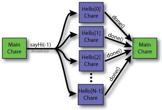

Broadcast "Hello World" Program: A Parallel "Hello World" Program

Figure: Control Flow of the Broadcast "Hello World" Program
This version of "Hello World" is basically the same as the Array "Hello World" program
except that all of the Hello chare objects will be told to say "Hello" at the same time
instead of each of them doing it one-by-one. The figure to the right shows the control
flow of the program. The source code is located below. Here are the differences from
the Array "Hello World" program:
broadcast: In the Array "Hello World" program, the last thing the Main::Main()
constructor did was tell the first element of the helloArray to sayHi().
In this version of "Hello World," Main::Main tells the entire array of Hello chare
objects to sayHi(). This is done by calling Hello::sayHi() on the array
itself (instead of just a single element of the array).
sayHi(): The Hello::sayHi() entry method no longer has the if statement that
tests if the object is the last object in the chare array. Instead, every element of the
chare arrays invokes done() on the Main chare object (sends a message).
done(): The Main::done() entry method is now invoked multiple times. The
Main chare object has a counter, doneCount, that counts the number of times
Main::done() has been called. Once this count reaches the number of elements in
the Hello chare array, the program exits.
numElements: Since the Main chare object is the only object that needs access
to the numElements value, it has been made into a member variable of the Main chare class.
Hello::Hello() {
// Nothing to do when the Hello chare object is created.
// This is where member variables would be initialized
// just like in a C++ class constructor.
}
// Constructor needed for chare object migration (ignore for now)
// NOTE: This constructor does not need to appear in the ".ci" file
Hello::Hello(CkMigrateMessage *msg) { }
void Hello ::sayHi(int from) {
// Have this chare object say hello to the user.
CkPrintf("\"Hello\" from Hello chare # %d on "
"processor %d (told by %d).\n",
thisIndex, CkMyPe(), from);
// Report to the Main chare object that this chare object
// has completed its task.
mainProxy.done();
}
#include "hello.def.h"
The "Main" Chare Class
Header File (main.h)
#ifndef __MAIN_H__
#define __MAIN_H__
class Main : public CBase_Main {
private:
/// Member Variables (Object State) ///
int numElements;
int doneCount;
mainchare Main {
entry Main(CkArgMsg* msg);
entry void done();
};
};
Source File (main.C)
#include "main.decl.h"
#include "main.h"
#include "hello.decl.h"
/* readonly */ CProxy_Main mainProxy;
// Entry point of Charm++ application
Main::Main(CkArgMsg* msg) {
// Initialize the local member variables
doneCount = 0; // Set doneCount to 0
numElements = 5; // Default numElements to 5
// There should be 0 or 1 command line arguments.
// If there is one, it is the number of "Hello"
// chares that should be created.
if (msg->argc > 1)
numElements = atoi(msg->argv[1]);
// We are done with msg so delete it.
delete msg;
// Display some info about this execution
// for the user.
CkPrintf("Running \"Hello World\" with %d elements "
"using %d processors.\n",
numElements, CkNumPes());
// Set the mainProxy readonly to point to a
// proxy for the Main chare object (this
// chare object).
mainProxy = thisProxy;
// Create the array of Hello chare objects.
CProxy_Hello helloArray = CProxy_Hello::ckNew(numElements);
// Invoke the "sayHi()" entry method on all of the
// elements in the helloArray array of chare objects.
helloArray.sayHi(-1);
}
// Constructor needed for chare object migration (ignore for now)
// NOTE: This constructor does not need to appear in the ".ci" file
Main::Main(CkMigrateMessage* msg) { }
// When called, the "done()" entry method will increment the doneCount.
// Once all of the Hello chare objects have indicated that they have
// completed their tasks, "done()" will cause the program to exit.
void Main::done() {
// Increment the doneCount. If all of the Hello chare
// objects have indicated that they are done, then exit.
// Otherwise, continue waiting for the Hello chare objects.
doneCount++;
if (doneCount >= numElements)
CkExit();
}
#include "main.def.h"
Makefile
The makefile for this program is the same as it is for the Array "Hello World" program.
The only difference in the output of this program and the Array "Hello World" program is
that all of the Hello chare objects are told to sayHi() by the Main chare object.
This is reflected by the fact that all the output lines below have "told by -1" in them.
$ ./charmrun +p3 ./hello 10
Running "Hello World" with 10 elements using 3 processors.
"Hello" from Hello chare # 0 on processor 0 (told by -1).
"Hello" from Hello chare # 3 on processor 0 (told by -1).
"Hello" from Hello chare # 6 on processor 0 (told by -1).
"Hello" from Hello chare # 9 on processor 0 (told by -1).
"Hello" from Hello chare # 1 on processor 1 (told by -1).
"Hello" from Hello chare # 4 on processor 1 (told by -1).
"Hello" from Hello chare # 7 on processor 1 (told by -1).
"Hello" from Hello chare # 2 on processor 2 (told by -1).
"Hello" from Hello chare # 5 on processor 2 (told by -1).
"Hello" from Hello chare # 8 on processor 2 (told by -1).
Figure: Output of the Broadcast "Hello World" Program
{kind=link}